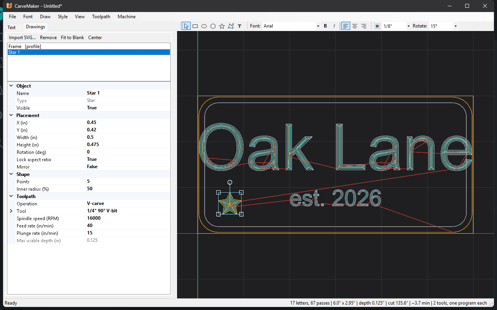
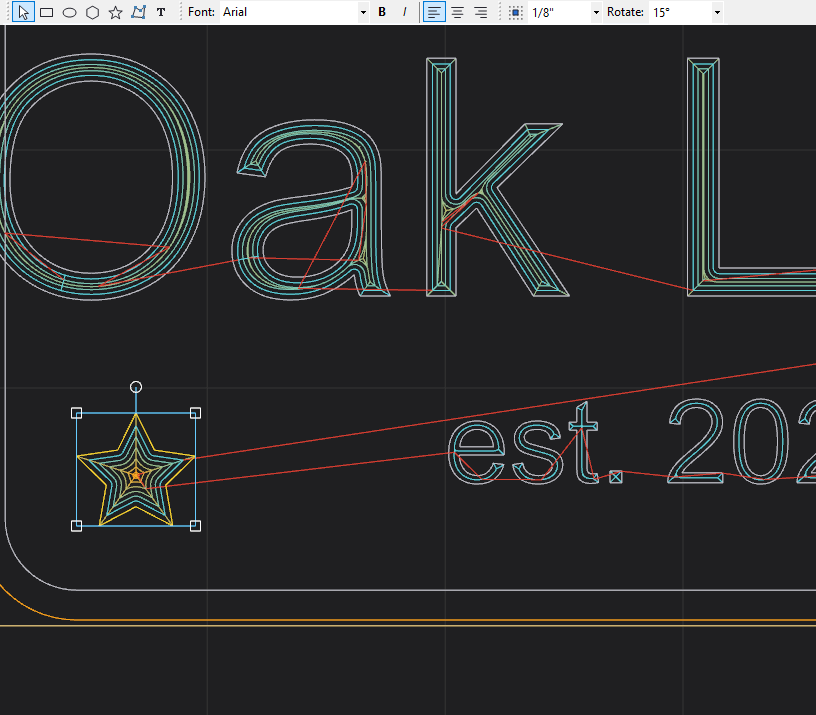
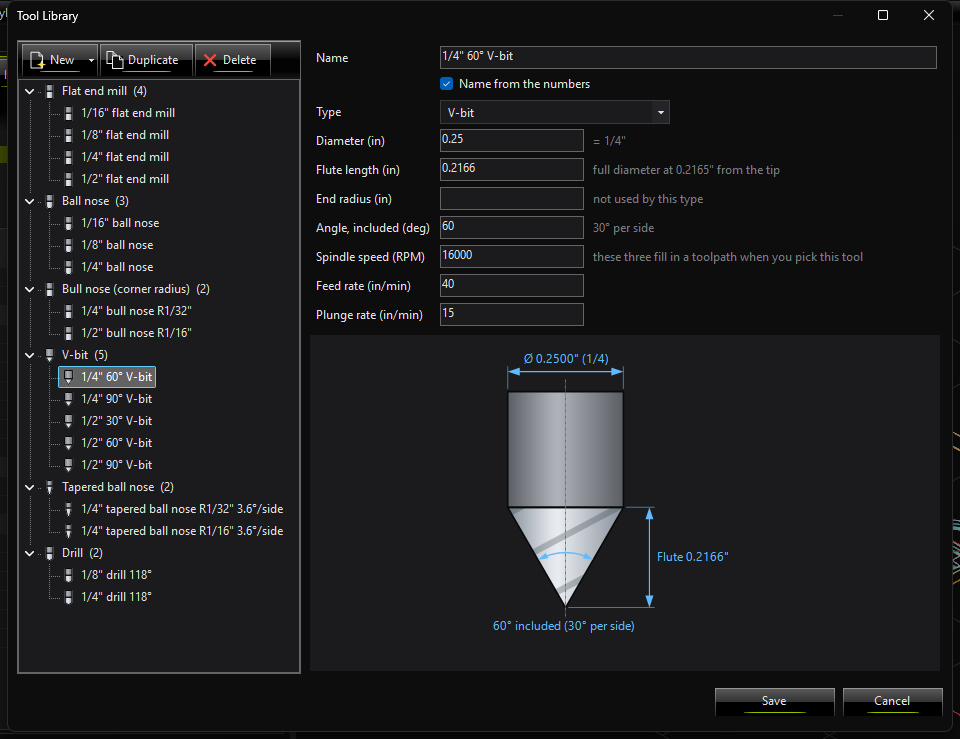
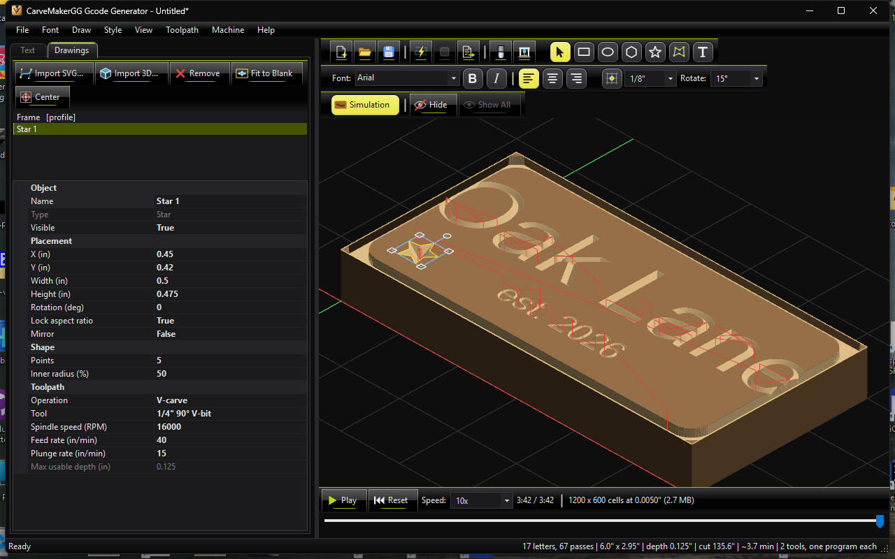

CarveMaker User Guide
CarveMaker turns text and drawings into CNC toolpaths: V-carving, pockets and profiles, with a live 3D preview and a material-removal simulation, written as G-code for FluidNC and GRBL style machines.

Getting started
- Set up the blank. Open (Ctrl+K) and enter the stock's width, height and thickness under 1. Blank. The blank is drawn in tan in the view. Units are inches; Z0 is the top of the stock.
- Type your text on the Text tab. Each line can be Large, Medium or Small and aligned left, centre or right.
- Add drawings if you like: draw shapes and text with the toolbar over the view, or import an SVG file.
- Check the toolpath. It regenerates as you type (or press F5). Press Ctrl+M to see the carved board.
- Export G-code with (Ctrl+G). Jobs with several tools are written as one program per tool, in order.
- Save the project (Ctrl+S) to come back to it later.
The main window
| Part | What it is for |
|---|---|
| Menu bar | File, Font (the main text's fonts), Draw, Style (text drawings), View, Toolpath, Machine and Help. |
| Text tab | The main text editor with its size and alignment buttons, and below it the text settings: sizes and fonts, placement on the blank, and the text's toolpath. |
| Drawings tab | The list of drawings (imported SVGs, shapes, areas and text drawings) and the settings of the selected one, including its toolpath. |
| Toolbars over the view | Draw Tools, Text Style, Snap and View. They can be moved, floated or hidden (see Toolbars). |
| The view | The blank, the outlines, the toolpath coloured by depth (cyan shallow, orange deep) and the rapid moves in red; or the simulated carving. |
| Status bar | Messages on the left (warnings such as text running off the blank, or hints for the current tool); on the right the job size, depth, cut length, time estimate and number of tools. |
Text
The Text tab holds the main text of the job. Formatting applies to whole lines:
- Size buttons: Large, Medium and Small. Their inch sizes are in the settings below the editor (1. Sizes and fonts), and each size has its own font: expand Size 1 - Large font to pick the family, bold and italic, or put the caret on a line and use (Ctrl+F).
- Align buttons: Left starts at the left margin, Center centres on the blank, Right ends at the right margin.
- 2. Placement on the blank: Top, Middle or Bottom, plus a Text offset to nudge the block. You can also Shift+drag the text block in the view.
- 3. Toolpath: how the text is cut (see Toolpaths).
By default sizes mean the height of a capital letter (Size means: CapHeight).
Drawings
Drawings are shapes, areas, text drawings and imported SVG files placed on the blank. Each has its own position, size, rotation and toolpath, shown on the Drawings tab when it is selected.
Drawing tools
Pick a tool on the Draw Tools toolbar or in the menu. With the view focused you can also press its key.
| Tool | Key | How to use it |
|---|---|---|
| Select | V / Esc | Shift+click to select, Shift+drag to move. A plain drag moves the view. |
| Rectangle | R | Drag a box. Corner radius rounds the corners. |
| Ellipse | E | Drag a box. |
| Polygon | P | Drag a box; set Sides (3 to 64). |
| Star | S | Drag a box; set Points and Inner radius (%). |
| Free-form area | A | Click the corners (three or more). Close it by clicking the first corner, double-clicking or pressing Enter. Backspace removes the last corner. |
| Text | T | Drag a box as tall as a capital letter (or just click), then type. |
While dragging out a shape, hold Shift to keep its own proportions (square, circle, regular polygon) and Ctrl to draw from the centre. Esc cancels. A plain click makes a 1" shape. After drawing, the tool switches back to Select and the new drawing is selected.
Text drawings
Text drawings are separate from the main text: put them anywhere, rotate them, and give them their own toolpath.
- After drawing the box an editor opens under the text. Type; Enter starts a new line; Ctrl+Enter or a click elsewhere finishes; Esc cancels.
- To change the words later, double-click the text, or use .
- The size is the Letter height (height of a capital letter). Shift+dragging a corner of the text resizes the lettering.
- The Text Style toolbar and the menu set the font, bold, italic and the alignment of the lines. With no text drawing selected they set the style for the next one.
Selecting and editing

Hold Shift to work on drawings. With the Select tool a plain left drag always moves the view, even over a drawing, so you can pan freely without moving anything by accident. Holding Shift when you press the mouse button selects, moves, scales and rotates. (While Shift is held the cursor shows what a press would do.)
- Shift+click a drawing to select it, or pick it in the list on the Drawings tab. A drawing is picked anywhere in its box. The drawing under the mouse lights up (its outline and box) as you move over it, so you can see what a Shift+click will take. Shift+click on empty space, or Esc, deselects.
- Where drawings overlap, a Shift+click picks the one with the smallest box under the mouse (text inside a frame picks the text). Once something is selected, a Shift+press anywhere on it keeps it: it is moved, scaled or rotated even where other drawings lie over it. Shift+Ctrl+click steps to the next drawing under the mouse, so you can reach one that lies behind or around another.
- Move by Shift+dragging the drawing, or nudge the selection with the arrow keys (0.01", or 0.1" with Shift).
- Scale by Shift+dragging the corner handles; they scale evenly about the opposite corner. The side handles stretch one way and appear when Lock aspect ratio is off (drawn shapes start unlocked). sets an exact size or percentage.
- Rotate by Shift+dragging the round knob above the box. It turns in steps (15 degrees by default); add Alt to turn freely.
- A plain double-click on a text drawing still opens it for typing; a plain double-click on empty space fits the view.
- also has Rotate 90° Left/Right, Mirror, Bring to Front, Send to Back and Delete (Delete key).
- Hide (Ctrl+H, the crossed eye on the View toolbar) puts the selected drawing out of the way: it is not shown, picked or carved. Show All (Ctrl+Shift+H, the open eye) brings every hidden drawing back. Hidden drawings stay in the list on the Drawings tab marked (hidden); their Visible row shows one again too.
- Exact values (position, size, rotation, shape and text settings) can be typed on the Drawings tab.
Snapping
- Snap to grid: the grid button on the Snap toolbar or . Pick the spacing (1" down to 1/32", 0.1" or 0.05"); picking one turns snapping on. A finer grid is drawn at that spacing.
- Moving lines up the nearest box corner or the centre of the drawing with the grid. Side handles put that side on the grid; corner handles scale until the corner reaches a grid line. New shapes, text and area corners land on grid points.
- Hold Alt while dragging to place something freely (and to turn freely while rotating).
- Rotation snap (Rotate list on the Snap toolbar, or ): Off, 1, 5, 15, 30, 45 or 90 degrees.
- Snap settings are remembered for the next start.
Importing SVG
or Import SVG on the Drawings tab. Logos, clipart and line art are carved like text. Paths, basic shapes, groups, transforms, symbols, styles and strokes are supported; <text> must be converted to paths in your drawing program first. The drawing is placed in the centre of the blank, shrunk to fit if needed. Fit to Blank and Center on the Drawings tab size and place it. Sample files are in the Samples folder next to the program.
3D models
(Ctrl+Shift+I) or Import 3D on the Drawings tab reads STL (binary or text), OBJ, PLY, 3MF and OFF models, and grayscale depth images (PNG, JPG, BMP, GIF, TIFF: light is high). A big file takes a few seconds; the window stays usable meanwhile.
A router reaches only what it sees from straight above, so a model is carved as its relief: its surface seen from one side. Anything hidden under an overhang is filled in, never cut into.
- Carved side (Relief rows on the Drawings tab): which side of the model faces the cutter. It is found on import: for a relief, the face that is not flat; for anything else the top, unless the top is flat, then the side with the most relief (the status bar says so). Pick another side here if needed; this reads the model file again.
- Size: type the Width or Height, the Scale (%) of the model's own size, use , or Shift+drag a corner handle. Fit to Blank and Center on the Drawings tab work too.
- Depth: how deep the relief is from its lowest to its highest point. It follows the size (the model keeps its proportions) until you type a depth. Top below stock lowers the whole relief under the stock top.
- Model units: STL and OBJ files do not say their units. Millimetres are assumed for a large model; change it if the size is wrong (the scale percentage stays).
- Machine area: Inside the model's outline keeps the tool centre over the model (its edge still cuts a tool radius beyond it, down to the model's lowest level), or The whole box.
Every 3D model has two toolpaths, Toolpath 1 - Roughing and Toolpath 2 - Finishing, each with its own tool, speeds and feeds and a Cut this pass switch. Any tool can be used except a drill.
| Pass | What it does |
|---|---|
| Roughing | Usually a flat end mill. Clears the stock in flat levels (Pass depth apart), with straight runs (Stepover apart) and a pass around the edge of each level, and leaves the Allowance on the surface for the finishing tool. |
| Finishing | Usually a ball nose or tapered ball nose. Parallel passes across the model at the Raster angle, following the surface, Stepover apart (10% of a 1/8" ball is 0.0125"). Smoothing drops points to keep the G-code smaller; it only ever leaves the path above the surface. With the roughing pass off, the finishing pass takes the material down in Pass depth levels first. |
No gouging: both passes are computed against a model that is never below the real one: every point of the tool, at every point of every move, stays on or above it, including the moves between passes. Where the next pass starts close by, the tool follows the surface to it; otherwise it lifts to the clearance height.
3D toolpaths take a while to compute (about 20 seconds for a 15" medallion). The status bar shows a busy bar and Abort (, Shift+F5); the last finished toolpath stays on screen. Moving or rotating a model does not compute them again. A finishing program for a large relief is big (tens of MB) and runs for hours: check the time in the status bar.
The roughing removes the stock top over the model, so before each program after the first, zero Z on a part of the stock top that has not been cut (a corner of the board).
Toolbars
- Drag a toolbar by its dotted grip to any edge of the view: top, bottom, left or right, in rows.
- Drag it off the view to float it in its own small window. Double-click that window's title to dock it again; closing it hides the toolbar.
- Right-click a toolbar to dock it on an edge, float it or hide it.
- shows hidden toolbars again; Reset Toolbars puts them all back along the top.
Toolpaths
The text (3. Toolpath on the Text tab) and every drawing (Toolpath on the Drawings tab) have their own toolpath: the Operation, the Tool (the … button opens the tool library), and the spindle speed, feed rate and plunge rate. Picking a tool fills in its speeds; you can still change them.
| Operation | What it does |
|---|---|
| V-carve | Carves the shape with a V-bit: deeper where the shape is wider, with sharp corners. Depths are under Machine Settings > 2. Carve. |
| Clears the inside to a flat floor with an end mill. Set the cut depth, pass depth and stepover. | |
| Profile | Follows the outline: Outside cuts the shape out at its true size, Inside cuts an opening, On the line engraves. Cut through the stock and tabs hold the part in place. |
| 3D roughing and finishing | The two toolpaths of a 3D model (see 3D models). |
The job runs 3D roughing and finishing first, then V-carving, pockets and profiles, with outside cut-outs last. When a job needs more than one tool, each tool gets its own G-code program; before each one, fit the tool and zero Z on the top of the stock.
Tool library

(Ctrl+L). Flat end mills, ball and bull nose, V-bits, tapered ball nose and drills, in inches. Each tool is its diameter, flute length, end radius and angle where they apply, plus its spindle speed, feed rate and plunge rate. Numbers accept decimals or fractions (0.25, 1/4, 1-1/4). New, Duplicate and Delete manage the list; Save stores it for all projects. The standard tools start with conservative values for wood: tune them to your machine and material.
Machine settings
(Ctrl+K) opens a window that can stay open while you work.
| Section | Settings |
|---|---|
| 1. Blank | Width, height, thickness, margin and the machine coordinates of the lower-left corner (use -width/2, -height/2 if you zero at the centre). |
| 2. Carve | V-carve depth (flat depth), roughing depth step and allowance, finishing resolution, floor stepover, the centerline finishing pass, milling direction and curve tolerance. |
| 3. Machine | Safe Z and clearance Z, rapid rate, spindle dwell, dust collection (M8/M9), retract to machine home (G53), cut order of the text lines, and G-code units (inches or millimetres). |
| 4. Simulation | Precision of the simulated board and how much of it is drawn (Display mesh: pick Low on integrated graphics). |
The view and simulation

- Pan: drag with the left button (anywhere, also over drawings: hold Shift to move a drawing instead), or with the middle button. Orbit: drag with the right button. Zoom: mouse wheel. Fit: double-click empty space or Ctrl+E.
- : Top (Ctrl+T) and Isometric (Ctrl+I) views, rapid moves, outlines and the 1" grid.
- Simulation (Ctrl+M, or the Toolpath / Simulation switch at the start of the View toolbar, which shows which of the two is on): shows the finished part first. The bar under the view has Play/Pause, Reset, the playback speed and a slider to scrub through the job.
Projects and G-code
- (Ctrl+S) stores everything (settings, text, drawings and their toolpaths) in a
.prjfile; Open Project (Ctrl+O) and New Project (Ctrl+N). The title bar shows*while there are unsaved changes. - (Ctrl+G) writes the program(s). Each program turns on the spindle (with M8 dust collection when it is on) and stops it at the end. With Retract to machine home (G53) on (Machine Settings > 3. Machine) it also retracts to machine home before the first move and parks Z at the end.
- reads a
.txtor.rtffile into the editor.
Keyboard and mouse
| Keys | Action |
|---|---|
| F1 | This guide |
| F5 / Shift+F5 | Generate the toolpath now / stop generating it |
| Ctrl+Shift+I | Import a 3D model or depth image |
| Ctrl+N / O / S | New, open, save project |
| Ctrl+G | Export G-code |
| Ctrl+F | Font for the current line's size |
| Ctrl+K / Ctrl+L | Machine Settings / Tool Library |
| Ctrl+T / I / E / M | Top view / isometric view / zoom to fit / simulation |
| V R E P S A T | Draw tools (view focused): select, rectangle, ellipse, polygon, star, area, text |
| Arrows (Shift) | Nudge the selection 0.01" (0.1") |
| Delete / Esc | Delete the selected drawing / cancel or deselect |
| Ctrl+H / Ctrl+Shift+H | Hide the selected drawing / show all hidden drawings |
| Left drag | Move the view (also over drawings) |
| Shift+click / Shift+drag | Select a drawing / move it, or scale or rotate it with its handles |
| Shift+Ctrl+click | Select the next drawing under the mouse |
| Shift / Ctrl while drawing a shape | Keep its proportions / draw from the centre |
| Alt while dragging | Ignore grid and rotation snapping |
Tips and troubleshooting
- "Text runs off the blank" in the status bar: make the text smaller, change the margins, or move it.
- A drawing is named in the status bar as not carved: usually its font is not installed on this PC. A text drawing from another PC carves the outline saved with the project until you change its words or style; pick an installed font to edit it.
- Areas narrower than the tool are reported: use a smaller end mill or V-carve instead.
- The view is blank or slow: CarveMaker needs OpenGL 3.3. On integrated graphics set Display mesh to Low; toolpaths and G-code still work without the view.
- Tune speeds and feeds in the Tool Library for your machine and material; every toolpath can still override them.
- Projects, the tool library and your preferences are kept when you install a newer version.
Newer versions: github.com/mikeoverbay/CarveMaker/releases